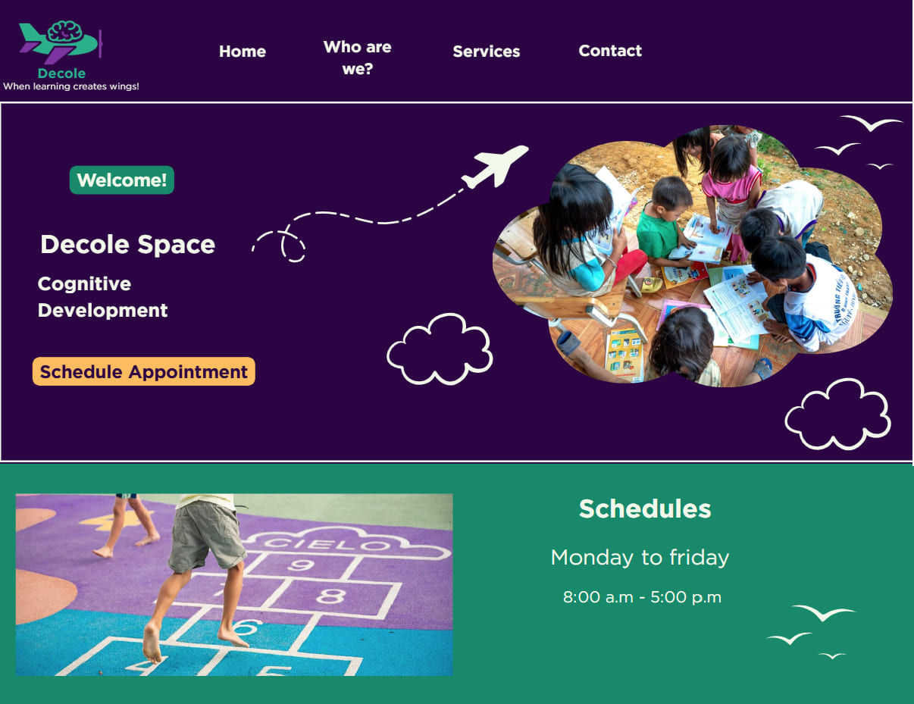

1. Site Name
Name: Decole Psychopedagogical Clinic
O nome "Decole" simboliza o desenvolvimento, o crescimento e a autonomia no processo de aprendizagem, remetendo à ideia de ganhar asas para o conhecimento.
2. Site Purpose
O objetivo principal do site é apresentar a Clínica Psicopedagógica Decole, seus serviços especializados e sua abordagem humanizada, facilitando o contato inicial e o agendamento de consultas.
3. Scenarios
Perguntas comuns que o site deve responder:
- "Como a psicopedagogia pode ajudar meu filho com dificuldades na escola?"
- "Eu sou adulto e sempre tive dificuldade de concentração; posso receber suporte?"
- "Quais são os horários de atendimento da clínica?"
4. Color Schema
- Primary (#2c0344): Utilizada para títulos principais e o cabeçalho.
- Secondary (#10896b): Utilizada para elementos de navegação e destaques visuais.
- Accent (#f2f9ea): Utilizada como cor de fundo para suavizar a leitura.
5. Typography
A família de fontes escolhida é a Roboto, por sua excelente legibilidade em telas digitais e ar moderno.
Heading 1 - Roboto Bold (32px)
Heading 2 - Roboto Bold (24px)
Body Text - Roboto Regular (16px). Este é um exemplo de como os parágrafos e o conteúdo geral serão exibidos no site para garantir conforto visual e profissionalismo.
6. Wireframes
Esboços estruturais da página inicial (Home Page):
Mobile View

Desktop View

Nota: Os wireframes incluem cabeçalho com logo, seção hero com botão de agendamento (CTA) e blocos informativos.